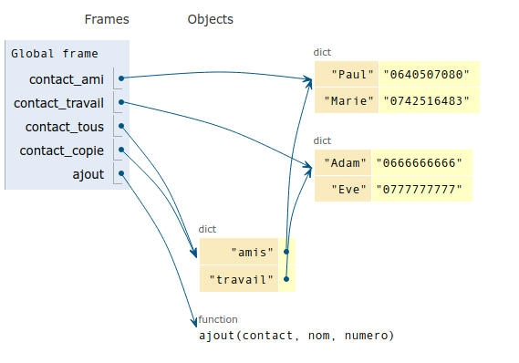

Thème types construits
Ce cours est inspiré du chapitre 14 du manuel NSI de la collection Tortue chez Ellipse, auteurs : Ballabonski, Conchon, Filliatre, N’Guyen. J’ai également consulté le prepabac Première NSI de Guillaume Connan chez Hatier, le document ressource eduscol sur les types construits et le livre Fluent Python.
Tous les exemples du cours peuvent être testés dans le fichier exemples_cours_dictionnaires_eleves.py.
p-uplets nommés et dictionnairesDans le TP sur les p-uplets (nommés aussi tuples) on a travaillé sur un fichier airports-reduit.csv qui contient les enregistrements nom;latitude;longitude;altitude;code_pays pour 57302 aéroports et on a extrait cette série dans un tableau de tuples. Par exemple le tuple correspondant à l’aéroport Saint-Exupéry est :
>>> p_uplet = tab_tuple_airports[32478]
>>> p_uplet
('Lyon Saint-Exupéry Airport', '45.725556', '5.081111', '821', 'FR')
>>> p_uplet[1]
'45.725556'Pour traiter cette information, il faut connaître la signification de chaque élément (appelé aussi champ) du tuple puisqu’on y accède par son index entier : 0 pour le ‘nom’, 1 pour la latitude etc ….
Il serait plus lisible de disposer d’un tuple à champs nommés et de pouvoir accéder à la valeur d’un champ par son nom. C’est le dernier type construit de données que nous allons étudier.
Un p-uplet nommé (ou tuple nommé) est un p-uplet dont chaque élément (ou champ) est repéré par un nom et non par un entier. Ces noms sont appelés clefs ou descripteurs du p-uplet nommé. Celui-ci s’écrit entre accolades avec une virgule séparant chaque paire constituée de la clef et de la valeur de la composante séparées par le symbole :.
En Python, les p-uplets nommés sont implémentés par les dictionnaires de type dict. Par la suite nous parlerons de dictionnaire plutôt que de p-uplet nommé.
Comme l’accès aux valeurs s’effectue par les noms/clefs, comme dans un dictionnaire où chaque nom est associé à sa définition, on parle aussi de tableaux associatifs.
Un dictionnaire n’est pas une séquence ordonnée d’éléments, l’accès s’effectue uniquement par clef.
Les photos prises avec un appareil numérique contiennent de nombreuses informations. Dans un fichier image, par exemple au format jpeg, sont stockées des données non seulement sur l’image elle-même mais aussi des metadonnées sur l’appareil, le logiciel utilisé, et en particulier des données EXIF (Exchangeable Image File Format). Une partie est accessible dans les propriétés de fichier ou avec un logiciel de traitement d’images. Les spécifications sont gérées par un organisme japonais, le JEITA, qui définit différents dictionnaires de référence permettant d’accéder à ces données. Les clés (les tags) et les valeurs sont des nombres écrits dans l’entête du fichier. Les dictionnaires donnent l’interprétation de ces clés. Par exemple la clé 256 a pour valeur ‘Width’ , la largeur de l’image en pixel et la clé 257 a pour valeur ‘Length’ , la hauteur de l’image en pixel.
Source : https://commons.wikimedia.org/wiki/File:DigiKam_EXIF_information_screenshot.png
On peut extraite les données EXIF avec le logiciel exiftool, le plugin Firefox exifviewer ou sous forme de dictionnaire Python avec le module pyexiftool. Le script Python exiftool_test.py ci-dessous contient une fonction qui extrait les données EXIF d’un fichier image passé en paramètre, sous la forme de dictionnaire.
#!/usr/bin/env python3
# -*- coding: utf-8 -*-
import sys
import exiftool
def extraire_exif(fichier):
et = exiftool.ExifTool()
et.start()
metadata = et.get_metadata(fichier)
et.terminate()
return metadata
#code client exécuté si script exécuté directement
if __name__ == "__main__":
#extrait les données exif du fichier passé en paramètre
print(extraire_exif(sys.argv[1]))fjunier@fjunier:~/sandbox$ sudo apt install libimage-exiftool-perl
fjunier@fjunier:~/sandbox$ pip3 install --user pyexiftool
fjunier@fjunier:~/sandbox$ chmod +x exiftool_test.py
fjunier@fjunier:~/sandbox$ ls -l exiftool_test.py
-rwxrwxr-x 1 fjunier fjunier 355 févr. 24 21:50 exiftool_test.py
fjunier@fjunier:~/sandbox$ ./exiftool_test.py image_mystere.jpg
{..., 'EXIF:Make': 'samsung', 'EXIF:Model': 'SM-G930F', 'EXIF:Orientation': 1, 'EXIF:XResolution': 72,
'EXIF:YResolution': 72, 'EXIF:ResolutionUnit': 2, 'EXIF:Software': 'G930FXXU3ERL3', 'EXIF:ModifyDate': '2018:12:30 16:26:24', 'EXIF:YCbCrPositioning': 1, 'EXIF:ExposureTime': 0.0005733944954, 'EXIF:FNumber': 1.7, 'EXIF:ExposureProgram': 2, 'EXIF:ISO': 50,
'EXIF:ExifVersion': '0220', 'EXIF:DateTimeOriginal': '2018:12:30 16:26:24', 'EXIF:CreateDate': '2018:12:30 16:26:24', 'EXIF:ComponentsConfiguration': '1 2 3 0', 'EXIF:ShutterSpeedValue': '0.000572673315054629', 'EXIF:ApertureValue': 1.6993699982773, 'EXIF:BrightnessValue': 8.36,
'EXIF:ExposureCompensation': 0, 'EXIF:MaxApertureValue': 1.6993699982773, 'EXIF:MeteringMode': 2,
'EXIF:Flash': 0, 'EXIF:FocalLength': 4.2, 'EXIF:UserComment': '', 'EXIF:SubSecTime': '0999',
...., 'EXIF:FlashpixVersion': '0100', 'EXIF:ColorSpace': 1, 'EXIF:ExifImageWidth': 4032, 'EXIF:ExifImageHeight': 3024, ..., 'EXIF:GPSVersionID': '2 2 0 0', 'EXIF:GPSLatitudeRef': 'N',
'EXIF:GPSLatitude': 42.4947222222222, 'EXIF:GPSLongitudeRef': 'E', 'EXIF:GPSLongitude': 3.13,
'EXIF:GPSAltitudeRef': 0, 'EXIF:GPSAltitude': 123, 'EXIF:GPSTimeStamp': '15:26:35','EXIF:GPSDateStamp': '2018:12:30', ....
}Il existe plusieurs façons de construire un dictionnaire :
{ et } qui entourent la série des paires clef : valeur ou le constructeur dict qui peut convertir en dictionnaire une séquence de tuple de la forme (clef, valeur).>>> processeur1 = {'annee' : 1974, 'fabricant' : 'Intel', 'Frequence' : '2 MHz','gravure' : '6000 nm', 'architecture' : '8080'}
>>> processeur2 = dict([('annee', 1978), ('fabricant', 'Intel'),('Frequence','5 MHz'),('gravure','3 micrometres'),('architecture','8086')])
>>> processeur2
{'annee': 1978, 'fabricant': 'Intel', 'Frequence': '5 MHz', 'gravure': '3000 nm', 'architecture': '8086'}
>>> processeur1['gravure']
'6000 nm'
>>> processeur2['gravure']
'3000 nm'list en remplaçant les parenthèses par des accolades. On peut récupérer les paires clef : valeur en parcourant un tableau de tuple.>>> tab_tuple = [('annee', 1989), ('fabricant', 'Intel'),('Frequence','25 MHz'),('gravure','600 nm'),('architecture','80486')]
>>> processeur3 = { clef : valeur for clef, valeur in tab_tuple }
>>> processeur3
{'annee': 1989, 'fabricant': 'Intel', 'Frequence': '25 MHz', 'gravure': '600 nm', 'architecture': '80486'}La fonction ord associe à un caractère son point de code Unicode et sa réciproque est la fonction chr.
>>> ord('a'), chr(97)
(97, 'a')
>>> [chr(k) for k in range(97, 97 + 10)]
['a', 'b', 'c', 'd', 'e', 'f', 'g', 'h', 'i', 'j']Donner des expressions qui permettent de définir les dictionnaires ci-dessous par compréhension :
dico[clef] renvoie la valeur appairée avec la clef donnée dans le dictionnaire dico. Le nombre d’éléments est donné par la fonction len, mais les éléments sont indexés par les clefs et non par des entiers : il n’y a pas de notion d’ordre dans un dictionnaire. Comme les tableaux de type list et contrairement aux p-uplets de type tuple, les dictionnaires de type dict sont modifiables après modification , on dit qu’ils sont mutables. Un dictionnaire peut être construit par ajout successif de paires clef : valeur à partir du dictionnaire vide {}. Enfin, on peut supprimer un élément si on connaît sa clef avec del dico[clef].>>> nobel2019 = {}
>>> nobel2019['Littérature'] = 'Peter Handke'
>>> nobel2019
{'Littérature': 'Peter Handke'}
>>> nobel2019['Paix'] = 'Kim Joon Hyun'
>>> nobel2019
{'Littérature': 'Peter Handke', 'Paix': 'Kim Joon Hyun'}
>>> nobel2019['Paix'] = 'Abiy Ahmed'
>>> nobel2019
{'Littérature': 'Peter Handke', 'Paix': 'Abiy Ahmed'}
>>> nobel2019['Maths'] = 'Cédric Villani'
>>> nobel2019
{'Littérature': 'Peter Handke', 'Paix': 'Abiy Ahmed', 'Maths': 'Cédric Villani'}
>>> del nobel2019['Maths']
>>> nobel2019
{'Littérature': 'Peter Handke', 'Paix': 'Abiy Ahmed'}int, float, bool et les types construits tuple, str sont immutables mais pas les types list et dict (un dictionnaire ne peut pas être une clef de dictionnaire).>>> jouet =dict()
>>> jouet[2] = 'clef de type int'
>>> jouet[True] = 'clef de type bool'
>>> jouet[(1,2)] = 'clef de type tuple'
>>> jouet
{2: 'clef de type int', True: 'clef de type bool', (1, 2): 'clef de type tuple'}
>>> jouet[[1,2]] = 'clef de type list -> impossible'
Traceback (most recent call last):
File "<stdin>", line 1, in <module>
TypeError: unhashable type: 'list'>>> vols = {'Lisbonne': {'heure': '21:10','num': 'EJU7674','compagnie': 'EASYJET'},
... 'Vienne': {'heure': '21:25','num': 'OS430','compagnie': 'AUSTRIAN AIRLINES'},
... 'Londres': {'heure': '21:55','num': 'BA357','compagnie': 'BRITISH AIRWAYS'}}
>>> vols['Londres']
{'heure': '21:55', 'num': 'BA357', 'compagnie': 'BRITISH AIRWAYS'}
>>> tab_dico_airports
[{'nom': 'Total Rf Heliport','latitude': '40.07080078125', 'longitude': '-74.93360137939453',
'altitude': '11', 'code_pays': 'US'},
{'nom': 'Aero B Ranch Airport', 'latitude': '38.704022', 'longitude': '-101.473911',
'altitude': '3435', 'code_pays': 'US'}]get permet de retourner la valeur None par défaut si on ne veut pas d’erreur.QCM de type E3C 2.
Réponses
A) il faut parcourir le dictionnaire avec une boucle à la recherche de la clé
B) on peut y accéder directement à partir de la clé
C) on ne peut pas accéder à une valeur contenue dans un dictionnaire à partir d’une clé
D) il faut d’abord déchiffrer la clé pour accéder à un dictionnaire
contacts = {'Paul': '0601010182', 'Jacques': '0602413824', 'Claire': '0632451153'}
Quelle instruction écrire pour ajouter à ce dictionnaire un nouveau contact nommé Juliette avec le numéro de téléphone ‘0603040506’ ?
Réponses
A) 'Juliette': '0603040506'
B) contacts.append('Juliette': '0603040506')
C) contacts['Juliette'] = '0603040506'
D) contacts.append('Juliette', '0603040506')
resultats = {'Paul':5 , 'Amina':1 , 'Léon' : 9 , 'Benoit':3}
Quelle affirmation est correcte ?
Réponses
A) resultats['Amina'] vaut 1
B) resultats[1] vaut 'Amina'
C) 'Paul' est une valeur de ce dictionnaire
D) 9 est une clé de ce dictionnaire
L = []
L.append({'marque': 'Canon', 'modele': 'EOS 7D', 'focale':
'19mm', 'flash': False})
L.append({'marque': 'Nikon', 'modele': 'CoolPix A1000',
'focale': '19mm', 'flash': True})
L.append({'marque': 'Sony', 'modele': 'HK 350', 'focale':
'24mm', 'flash': False})
L.append({'marque': 'Sony', 'modele': 'HK 350', 'focale':
'19mm', 'flash': True})…… et ainsi de suite, d'autres informations ont été ajoutées ……
On veut extraire de ces informations la liste Z des photographies obtenues avec un Canon ou un Nikon et une distance focale de 19 mm.
Quelle instruction permet de réaliser cette extraction ?
Réponses
A) Z = [ p for p in L if (p['marque'] == 'Canon' or p['focale'] == '19mm') and (p['marque'] == 'Nikon' or p['focale'] == '19mm') ]
B) Z = [ p for p in L if (p['marque'] == 'Canon' and p['focale'] == '19mm') and (p['marque'] == 'Nikon' and p['focale'] == '19mm') ]
C) Z = [ p for p in L if (p['marque'] == 'Canon' or p['focale'] == '19mm') or (p['marque'] == 'Nikon' or p['focale'] == '19mm') ]
D) Z = [ p for p in L if (p['marque'] == 'Canon' and p['focale'] == '19mm') or (p['marque'] == 'Nikon' and
p['focale'] == '19mm') ]
Réponses
A) d[4] B) d[26] C) d[z] D) d['z']
t = [ {'id':1, 'age':23, 'sejour':'PEKIN'},
{'id':2, 'age':27, 'sejour':'ISTANBUL'},
{'id':3, 'age':53, 'sejour':'LONDRES'},
{'id':4, 'age':41, 'sejour':'ISTANBUL'},
{'id':5, 'age':62, 'sejour':'RIO'},
{'id':6, 'age':28, 'sejour':'ALGER'}]
Quelle affirmation est correcte ?
Réponses
A) t est une liste de listes B) t est une liste de dictionnaires
C) t est un dictionnaire de listes D) t est une liste de tuples
Il existe trois façons de parcourir un dictionnaire. Dans les exemples, on utilisera un dictionnaire qui représente un annuaire :
Parcours par clefs :
list, str et tuple, les dictionnaires sont itérables avec la syntaxe for clef in dico de type list ou tuple, mais on ne parcourt ainsi que les clefs. On peut aussi utiliser la méthode keys. À partir des clefs on peut retrouver les valeurs.>>> for clef in dico:
... print("Clef -> ", clef)
...
Clef -> Paul
Clef -> Marie
Clef -> Hicham
>>> for clef in dico.keys():
... print("Clef ->", clef, " Valeur ->", dico[clef])
...
Clef -> Paul Valeur -> 0640507080
Clef -> Marie Valeur -> 0742516483
Clef -> Hicham Valeur -> 0987416543for k in range(len(dico)).>>> for k in range(len(dico)):
... print(dico[k])
...
Traceback (most recent call last):
File "<stdin>", line 2, in <module>
KeyError: 0On peut parcourir un dictionnaire par valeurs avec sa méthode values. À partir des valeurs on ne peut cependant pas retrouver les clefs.
>>> for val in dico.values():
... print("Valeur -> ", val)
...
Valeur -> 0640507080
Valeur -> 0742516483
Valeur -> 0987416543On peut parcourir un dictionnaire par paires (clef, valeur) valeurs avec sa méthode items. On utilise le mécanisme de tuple unpacking dans la boucle for.
On considère le dictionnaire :
Réponses
A) a b c B) True False True C) (a, True) (b, False) (c, True)
A) a b c B) True False True C) (a, True) (b, False) (c, True)
Une variable de type dict n’est qu’une référence, un alias vers la zone mémoire où sont stockées les données. Comme pour les tableaux de type list il faut prêter attention aux effets non maîtrisées des références partagées.
deepcopy du module copy.On donne ci-dessous un programme et deux visualisations de son environnement : avant et après l’exécution de la dernière instruction.
contact_ami = { 'Paul' : '0640507080', 'Marie' : '0742516483'}
contact_travail = { 'Adam' : '0666666666', 'Eve' : '0777777777'}
contact_tous = {'amis' : contact_ami, 'travail' : contact_travail}
contact_copie = contact_tous
def ajout(contact, nom, numero):
contact[nom] = numero
ajout(contact_ami, 'Napoleon', '0618001814')
& 
Les dictionnaires de type dict sont implémentés en Python par des tables de hachage qui est une structure de données très efficace pour le test d’appartenance, la recherche ou l’insertion d’élément. On peut considérer que ces opérations se font en temps quasiment constant, c’est-à-dire indépendant de la taille du dictionnaire alors que la recherche et le test d’appartenance s’effectue en temps linéaire en moyenne (proportionnel à la taille du tableau) pour les tableaux de type list ou les tuple. Cet optimisation des performances en temps se fait au détriment de l’occupation en espace, les dictionnaires étant plus gourmands en mémoire que les tableaux.
On donne ci-dessous un comparatif de temps d’exécutions pour la recherche de 1000 flottants d’un tableau needle (aiguilles) de taille 500, dans des tableaux de flottants haystack (meule de foin) de taille croissante \(10^{k}\) avec \(k \in \{3,4,5,6,7\}\). Pour chaque test, les éléments de haystack et needlesont tous distincts et la moitié de needle est dans haystack.
Le code de cet exemple, tiré de l’ouvrage Python Fluent de Luciano Ramalho, est disponible avec nos commentaires dans l’archive test_performance_in.zip.
Type de conteneur dict
--------------------
Taille de la meule de foin : 1000
Temps minimum de recherche de 1000 aiguilles (sur 5 recherches): 0.000104s
--------------------
Taille de la meule de foin : 10000
Temps minimum de recherche de 1000 aiguilles (sur 5 recherches): 0.000196s
--------------------
Taille de la meule de foin : 100000
Temps minimum de recherche de 1000 aiguilles (sur 5 recherches): 0.000252s
--------------------
Taille de la meule de foin : 1000000
Temps minimum de recherche de 1000 aiguilles (sur 5 recherches): 0.000399s
--------------------
Taille de la meule de foin : 10000000
Temps minimum de recherche de 1000 aiguilles (sur 5 recherches): 0.000483s
--------------------
Type de conteneur list
--------------------
Taille de la meule de foin : 1000
Temps minimum de recherche de 1000 aiguilles (sur 5 recherches): 0.008002s
--------------------
Taille de la meule de foin : 10000
Temps minimum de recherche de 1000 aiguilles (sur 5 recherches): 0.078902s
--------------------
Taille de la meule de foin : 100000
Temps minimum de recherche de 1000 aiguilles (sur 5 recherches): 0.812977s
--------------------
Taille de la meule de foin : 1000000
Temps minimum de recherche de 1000 aiguilles (sur 5 recherches): 8.554425s
--------------------
Taille de la meule de foin : 10000000
Temps minimum de recherche de 1000 aiguilles (sur 5 recherches):84.754335s
--------------------(clef, valeur) ou clef : valeur. Chaque valeur est indexée par sa clef et non par un index entier comme dans un p-uplet.dict implémenté par une table de hachage qui permet des opérations très performantes en temps constant.dico[clef] = valeur.dict est une référence et elle peut être modifiée par effet de bord car c’est une valeur mutable.for clef in doc.keys()for clef in doc.values()(clef, valeur) avec for (clef, valeur) in doc.items(){kind=link}
{kind=link}